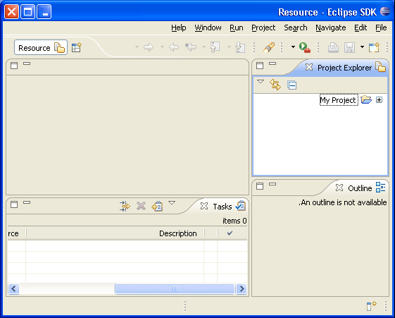

A bidirectional language is one that can write either right to left or left to right based on context. Bidirectional text is supported throughout the platform. Eclipse will recognize Hebrew, Arabic, Farsi and Urdu as bidirectional by default.
The orientation of the workbench is determined in one of the following ways (in order of priority):
In JFace, the orientation can be determined by calling org.eclipse.jface.Window#getDefaultOrientation(). Standalone JFace applications must set the default orientation by calling org.eclipse.jface.Window#setDefaultOrientation(), otherwise it will assume a default value of SWT.NONE. The default orientation is set automatically when running the Workbench. All subclasses of org.eclipse.jface.Window inherit this default orientation.
Views and editors inherit the window orientation from their parent. Dialogs should inherit orientation by using the shell style of their superclass by calling super.getShellStyle() when creating or configuring their shell.

Figure 1 - Screen shot of right to left orientation of the resource perspective in English
Base direction of text (a.k.a. "paragraph direction", "reading order") refers to the overall progression of text in display and it should be controlled independently of the workbench orientation.
In the context of non-bidi scripts the preferred BTD is LTR. In the context of bidi scripts the preferred BTD is RTL. And in case of mixed text content the preferred BTD is auto (a.k.a. "contextual"). When this type of BTD is effective, the BTD is derived from the directionality of the first strong bidi character.
An appropriate base text direction is essential for text readability.
The default BTD of the workbench can be set with the -bidi "on=y;textDir=[ltr|rtl|auto]" command line option:
If not specified on the command line, the default text direction is inherited from the workbench orientation.
In JFace, the default BTD can be retrieved by calling
org.eclipse.jface.util.BidiUtils#getTextDirection(). Standalone JFace applications can set
the default text direction by calling org.eclipse.jface.util.BidiUtils#setTextDirection().
Then, to apply the default text direction, an application can call
org.eclipse.jface.util.BidiUtils#applyBidiProcessing().
Example:
public static void main(String[] args) {
BidiUtils.setBidiSupport(true);
BidiUtils.setTextDirection(BidiUtils.RIGHT_TO_LEFT);
Display display = new Display();
Shell shell = new Shell(display);
shell.setLayout(new RowLayout(SWT.VERTICAL));
Button button = new Button(shell, SWT.PUSH);
button.setText("RTL button!!!");
Text text = new Text(shell, SWT.NONE);
text.setText("RTL text!!!");
BidiUtils.applyTextDirection(shell, BidiUtils.BTD_DEFAULT);
shell.pack();
shell.open();
while (!shell.isDisposed()) {
if (!display.readAndDispatch()) display.sleep();
}
display.dispose();
}
In SWT, base text direction can be set at a control (either leaf or composite) level. Composites propagate the BTD to their children. The base text direction can be applied as follows:
org.eclipse.swt.SWT.FLIP_TEXT_DIRECTION
style, which indicates that the base text direction should be opposite to the control
orientation.org.eclipse.swt.widgets.Control#setTextDirection().
The valid argument values are
org.eclipse.swt.SWT.LEFT_TO_RIGHT and org.eclipse.swt.SWT.RIGHT_TO_LEFT.
Note that at present this is implemented on the win32 platform only.
Example:
public static void main(String[] args) {
Display display = new Display();
Shell shell = new Shell(display);
shell.setText("RTL shell!!!");
shell.setTextDirection(SWT.RIGHT_TO_LEFT);
shell.setLayout(new RowLayout(SWT.VERTICAL));
Button button = new Button(shell, SWT.PUSH);
button.setText("RTL button!!!");
button.setTextDirection(SWT.RIGHT_TO_LEFT);
Text text = new Text(shell, SWT.NONE);
text.setText("LTR text!!!");
text.setTextDirection(SWT.LEFT_TO_RIGHT);
Label label = new Label(shell, SWT.FLIP_TEXT_DIRECTION);
label.setText("RTL label!!!");
shell.pack();
shell.open();
while (!shell.isDisposed()) {
if(!display.readAndDispatch()) display.sleep();
}
display.dispose();
}
JFace applications can set the base text direction on an SWT control by calling
org.eclipse.jface.util.BidiUtils#applyTextDirection(), which for
org.eclipse.swt.widgets.Text and org.eclipse.swt.custom.StyledText
takes effect on win32 and gtk platforms through invocation of the
org.eclipse.swt.events.SegmentListener or
org.eclipse.swt.custom.BidiSegmentListener mechanism, and for other controls it
works on win32 platform, calling org.eclipse.swt.widgets.Control#setTextDirection()
API.
Example:
public static void main(String [] args) {
Display display = new Display();
Shell shell = new Shell(display);
shell.setLayout(new RowLayout(SWT.VERTICAL));
Button button = new Button(shell, SWT.PUSH);
button.setText("RTL button!!!");
Text text = new Text(shell, SWT.NONE);
text.setText("Auto text!!!");
BidiUtils.applyTextDirection(shell, BidiUtils.RIGHT_TO_LEFT);
BidiUtils.applyTextDirection(text, BidiUtils.AUTO);
shell.pack();
shell.open();
while (!shell.isDisposed()) {
if (!display.readAndDispatch()) display.sleep();
}
display.dispose();
}
The orientation of the workbench is also independent of the special case processing
for bidirectional languages. If the language of the current Locale is Hebrew,
Arabic, Farsi or Urdu text processing will be enabled. Text processing is used
to handle special case characters that should not be processed as bidirectional
text such as path separators. See org.eclipse.osgi.util.TextProcessor
for more details.
In many cases your icons will not make any sense in right to left mode. In particular any icon to do with editing will have this issue.To enable lookup of images in a fragment, use $nl$ in your icon path and use the org.eclipse.core.runtime.FileLocator class to find icons at runtime.
For example
String iconPath = "$nl$/icons/myicon.gif"; URL url = FileLocator.find( Platform.getBundle(MyPluginId), new Path(iconPath), null); Image Descriptor descriptor = ImageDescriptor.createFromURL(url);
If the icon reference is in your plugin.xml file, make sure you have the $nl$ prefix on your path and the lookup will be handled for you. If you define your own extension points that involve icons, be sure to load images in the same way.
There are no hard and fast rules for determining what icons need to be overridden in a right to left language. In general, focus on icons that imply a textual direction with a horizontal arrow.